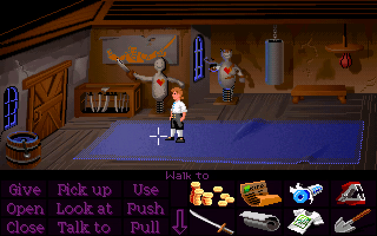
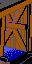
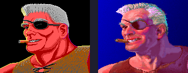
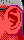
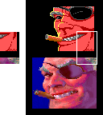
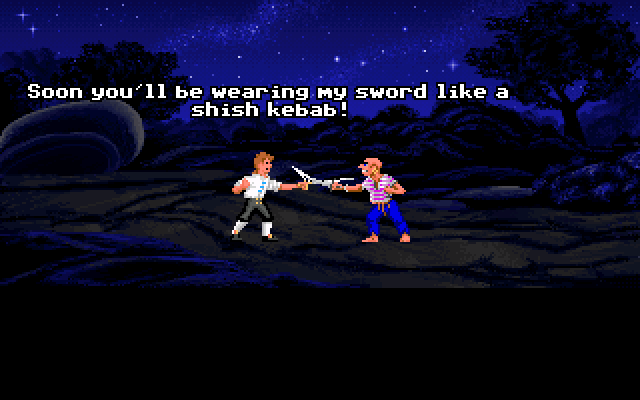
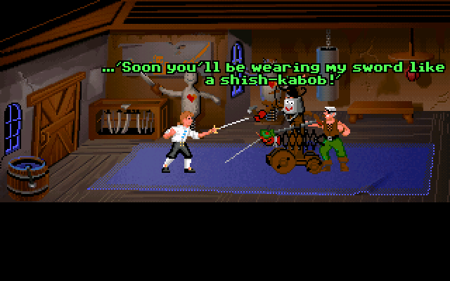
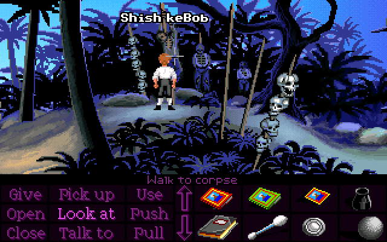
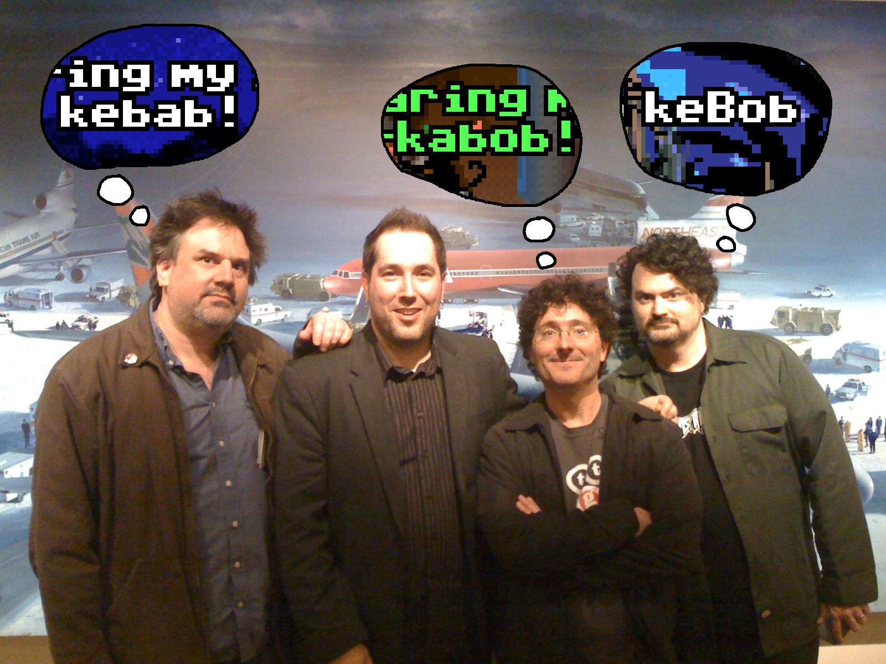

There are several unused hotspots inside Captain Smirk's house which we can never interact with because we never get a chance to explore his house freely.

From left to right, we have the "door", a "box full o' swords", the two dummies called "Norbert" and "Hubert", a "sandbag" and a "punching bag". None of them have any special interactions with the exception of the door, which can be opened, closed, and walked through. The door is only ever seen closed in the finished game, so the unused image of the open door was never updated to VGA.

It's possible that there was some intention at some point for the player to walk around Smirk's house freely, but I think it's much more likely that whoever first implemented this room simply improvised some hotspots in case they decide to do something with it later, rather than having a clear plan.
In the EGA version, when Smirk's expression changes, his ear also moves slightly. This doesn't happen in the VGA versions - his change in expression is limited to his eyes and mouth.

The EGA version contains an entire extra object just to handle the ear animation, which goes unused in the VGA versions.

The CD version of this image is blank, but the VGA floppy version appears to show cropped sections of Smirk's face in both EGA and VGA graphics.

Maybe this is giving us a tiny look at the process of converting the graphics to VGA?
This one's tangentially related to Captain Smirk, but I'm not sure where else to put it.
The word for this dish originating in the Middle East is spelled in three distinct ways throughout the game: kebab, kabob, and kebob.



That last one is maybe contrived due to being a pun, but it is still a valid way of spelling it, capitalisation aside. I think it's fun to imagine that Ron, Dave and Tim each had a different preferred spelling.
